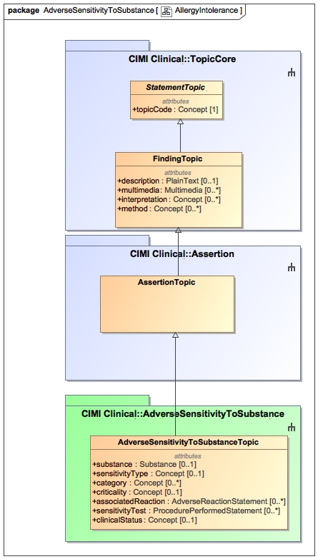

The AdverseSensitivityToSubstance class is used to estimate of the potential clinical harm, or seriousness, of a reaction to an identified substance. It is typically used to express a patient's allergies or intolerances.
Please note that the classes in the AdverseSensitivityToSubstance are currently under development with the participation of the HL7 Patient Care Working Group.
